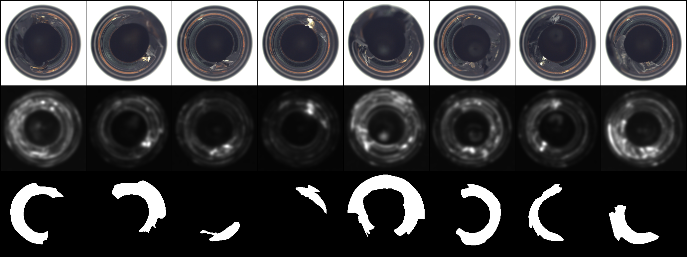
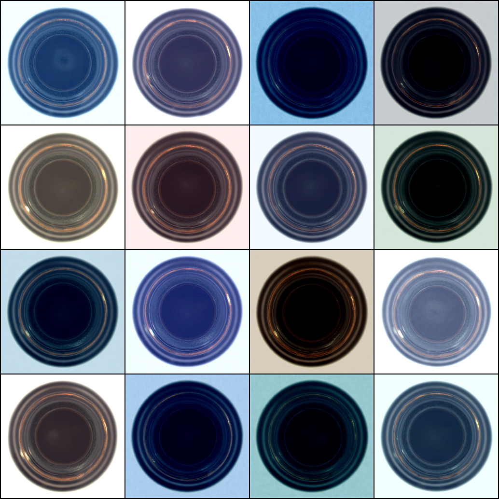
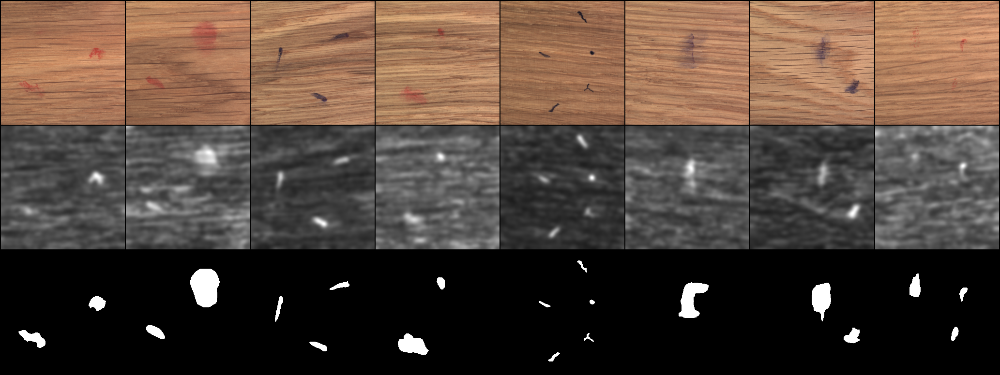
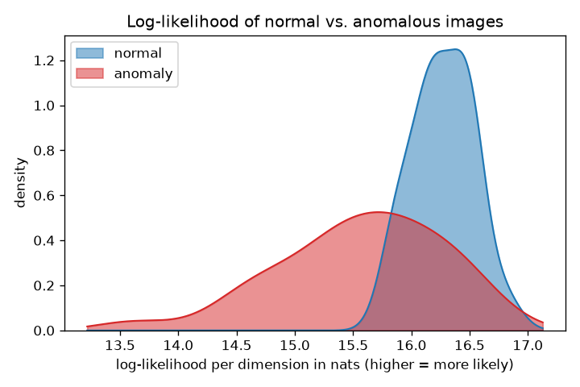

This project builds a score-based diffusion model and uses it to find defects in images of manufactured parts. The model sees only defect-free parts during training. At test time, it flags parts that look unlike anything it learned, and it produces a pixel-level map showing where the differences lie. We work with MVTec AD, a popular dataset of industrial images that comes with pixel-accurate masks of the defects.
The model is a continuous-time diffusion process written as a stochastic differential equation. We were drawn to this formulation because a single object gives us three different things at once: a way to generate new images, a way to reconstruct an existing one, and, through a companion ordinary differential equation, an exact value for the probability density of any image (a property not enjoyed by the discrete-time counterpart). Most of what follows is an account of where those three capabilities come from and how they become an anomaly detector. We report empirical results and work carefully through the underlying mathematics along the way.
We implemented the stochastic differential equation, its time reversal, the training
loss, the likelihood computation, and the three scoring methods ourselves. For the
components that are standard and heavily optimized, we opted for existing libraries: the
U-Net that parameterizes the model comes from Hugging Face
diffusers, automatic differentiation and mixed-precision training from
PyTorch, the numerical ODE solver from torchdiffeq, and the two comparison
detectors, PatchCore and PaDiM, from anomalib. Of those comparison methods,
PatchCore was more accurate than our model on every category we tested (an expected
result, more on that when we talk about evaluation).
For many classification problems, we have labeled examples of every class we care about. Defect detection does not work that way in the real world. A factory produces an enormous number of good parts and a small, unpredictable number of bad ones. This means that many defects will inherently be unaccounted for, since it is virtually impossible to catalogue all of them. Assembling a balanced, labeled dataset of defects is therefore impractical, and a classifier trained on a fixed list of known defects will miss anything outside of that list.
The usual response is to model only the normal class. We learn what defect-free parts look like, and then we measure how far a new image sits from that learned notion of normal. This is the setting for MVTec AD. For each category, we train on a collection of good images and then evaluate on a held-out mix of good and defective images whose defect regions are annotated pixel by pixel. Those masks are used only to score the evaluation, and are never seen by the model.
A diffusion model suits this setting because it is, in the end, a model of a probability distribution over images. Once we have a distribution over normal parts, several distinct notions of "how anomalous is this image" become natural to talk about, and comparing them is one of the more interesting parts of the work. Before we can score anything, though, we need the actual model itself, so we start with the process that defines it.
A score-based diffusion model is built around a family of probability distributions \( \{p_t\}_{t \in [0,T]} \) that interpolates between the data and pure noise. At \( t=0 \), the distribution \( p_0 \) is the manifold of real images. As \( t \) increases, we add more and more noise, and by \( t=T \), the distribution \( p_T \) is an isotropic Gaussian with no structure left. The bridge between the two ends is a stochastic differential equation that describes how a single sample drifts and diffuses as \( t \) grows:
$$ \mathrm{d}\mathbf{x} = \mathbf{f}(\mathbf{x}, t)\,\mathrm{d}t + g(t)\,\mathrm{d}\mathbf{w}. $$Let's break down the above equation, one piece at a time. \( \mathbf{f}(\mathbf{x}, t) \) is the drift, which can be thought of as a deterministic push applied to the sample at each instant. \( g(t) \) is the diffusion coefficient, which dictates the amount of randomness added in. And \( \mathbf{w} \) is a standard Brownian motion, the continuous-time limit of a random walk. The term \( \mathrm{d}\mathbf{w} \) is what makes this a stochastic differential equation rather than an ordinary one. Over an infinitesimal step \( \mathrm{d}t \), the sample takes a small deterministic step \( \mathbf{f}\,\mathrm{d}t \), along with a random Gaussian kick whose typical size grows proportional to \( \sqrt{\mathrm{d}t} \).
Brownian motion \( \mathbf{w}_t \) (also called a Wiener process) is what a random walk becomes in the limit of infinitely many, infinitely small steps. Imagine a particle on a line that, every \( \Delta t \) seconds, hops left or right by a distance \( \sqrt{\Delta t} \). Notice how the step size is deliberately \( \sqrt{\Delta t} \) and not \( \Delta t \), since if the steps shrank in proportion to \( \Delta t \), the walk would freeze into a smooth curve as \( \Delta t \to 0 \), and if they stayed of order \( 1 \), it would fly off to infinity. The square-root scaling is the single choice that survives the limit as genuine, persistent randomness, neither vanishing nor exploding.
Four key properties define Brownian motion: 1) it starts at the origin, \( \mathbf{w}_0 = 0 \), 2) its sample paths are continuous, 3) its increments over non-overlapping intervals are independent, and 4) an increment across an interval of length \( s \) is Gaussian with covariance proportional to the elapsed time, \( \mathbf{w}_{t+s} - \mathbf{w}_t \sim \mathcal{N}(0, s\,\mathbf{I}) \). In several dimensions, the coordinates are independent Brownian motions, which is written compactly as \( \mathbb{E}[\mathrm{d}\mathbf{w}\, \mathrm{d}\mathbf{w}^\top] = \mathbf{I}\, \mathrm{d}t \).
Two consequences of the square-root scaling are persistent through everything that follows. First, since an increment over \( \mathrm{d}t \) has standard deviation \( \sqrt{\mathrm{d}t} \), the ratio \( \mathrm{d}\mathbf{w} / \mathrm{d}t \) behaves like \( 1 / \sqrt{\mathrm{d}t} \) and blows up. The path is continuous but nowhere differentiable, so an SDE is really shorthand for an integral equation, not something we are allowed to divide through by \( \mathrm{d}t \). Second, and more useful, the squared increments refuse to vanish the way they do for a smooth path. For a differentiable curve, \( (\mathrm{d}x)^2 \) is of order \( (\mathrm{d}t)^2 \) and negligible next to \( \mathrm{d}t \). Here, \( (\mathrm{d}\mathbf{w})^2 \) has expected size \( \mathrm{d}t \) itself, a whole order larger. This one fact, written \( (\mathrm{d}\mathbf{w})^2 = \mathrm{d}t \) and called the quadratic variation, is what forces an extra term into the chain rule for stochastic processes. Upcoming derivations put this key observation to work.
For \( \mathbf{f} \) and \( g \), we use a specific and very convenient choice, the variance-preserving SDE. Its drift pulls every sample gently toward the origin, and a single positive schedule \( \beta(t) \), which we are free to design, sets the local noise level:
$$ \mathrm{d}\mathbf{x} = -\tfrac{1}{2}\beta(t)\,\mathbf{x}\,\mathrm{d}t + \sqrt{\beta(t)}\;\mathrm{d}\mathbf{w}. $$What makes this choice so favorable is that it is linear in \( \mathbf{x} \), and a linear SDE driven by Gaussian noise sends Gaussians to Gaussians. So if we fix one clean image \( \mathbf{x}_0 \) and ask where it has drifted to by time \( t \), the answer \( \mathbf{x}_t \) is Gaussian, and a Gaussian is specified by its mean and its variance. Both of these quantities come out in closed form from the schedule. Abbreviating the accumulated schedule as \( \alpha(t) = \exp\!\big( -\tfrac{1}{2}\int_0^t \beta(s)\, \mathrm{d}s \big) \), the distribution of \( \mathbf{x}_t \) given \( \mathbf{x}_0 \), called the perturbation kernel, is
$$ p_{0,t}(\mathbf{x}_t \mid \mathbf{x}_0) = \mathcal{N}\!\Big( \mathbf{x}_t;\ \alpha(t)\,\mathbf{x}_0,\ \big(1 - \alpha(t)^2\big)\,\mathbf{I} \Big). $$We already know \( \mathbf{x}_t \) is Gaussian, so we only have to find its mean and variance as functions of time. The variance-preserving SDE acts on each coordinate separately and identically, so it is enough to follow one scalar coordinate, with drift \( a(x, t) = -\tfrac{1}{2}\beta(t)\, x \) and diffusion \( b(t) = \sqrt{\beta(t)} \). We can use a result called Itô's Lemma (followed by an expectation) to turn the SDE into an ODE for the average of any function of \( x_t \), and this can be used to solve for the moments needed to compute the mean and variance. Itô's Lemma is the chain rule for a stochastic process, corrected for the quadratic variation \( (\mathrm{d}w)^2 = \mathrm{d}t \) from the previous box. For \( \mathrm{d}x = a\,\mathrm{d}t + b\,\mathrm{d}w \) and any smooth \( \varphi(x) \), a Taylor expansion to second order keeps the term \( \tfrac{1}{2}\varphi''(\mathrm{d}x)^2 \) that ordinary calculus discards, giving
$$ \mathrm{d}\varphi(x_t) = \Big( a\,\varphi'(x_t) + \tfrac{1}{2} b^2\,\varphi''(x_t) \Big)\, \mathrm{d}t + b\,\varphi'(x_t)\, \mathrm{d}w. $$Now take the expectation of both sides. The \( \mathrm{d}w \) term gets deleted (Brownian increments have mean zero), leaving an ordinary differential equation for the deterministic quantity \( \mathbb{E}[\varphi(x_t)] \):
$$ \frac{\mathrm{d}}{\mathrm{d}t}\, \mathbb{E}[\varphi(x_t)] = \mathbb{E}\Big[ a\,\varphi'(x_t) + \tfrac{1}{2} b^2\,\varphi''(x_t) \Big]. $$Take the mean first, with \( \varphi(x) = x \) (first moment). Then \( \varphi' = 1 \) and \( \varphi'' = 0 \), so the Itô correction term is absent and this case is really just averaging the SDE. Because \( \beta(t) \) is a fixed schedule, it pulls straight out of the expectation, and writing \( m(t) = \mathbb{E}[x_t] \), it yields
$$ \frac{\mathrm{d}}{\mathrm{d}t}\, m(t) = \mathbb{E}\big[ -\tfrac{1}{2}\beta(t)\, x_t \big] = -\tfrac{1}{2}\beta(t)\, m(t). $$This is a separable linear ODE. Dividing by \( m \) and integrating from \( 0 \) to \( t \),
$$ \frac{\mathrm{d}m}{m} = -\tfrac{1}{2}\beta(t)\, \mathrm{d}t \quad\Longrightarrow\quad \log m(t) - \log m(0) = -\tfrac{1}{2}\int_0^t \beta(s)\, \mathrm{d}s, $$and exponentiating with \( m(0) = x_0 \) gives \( m(t) = x_0\, \exp\!\big( -\tfrac{1}{2}\int_0^t \beta(s)\, \mathrm{d}s \big) = \alpha(t)\, x_0 \). Now we see where the shorthand \( \alpha(t) \) comes from: it is just the accumulated, exponentiated schedule.
Now for the second moment, with \( \varphi(x) = x^2 \), \( \varphi' = 2x \) and \( \varphi'' = 2 \), so the Itô correction \( \tfrac{1}{2} b^2 \varphi'' = \tfrac{1}{2} \beta \cdot 2 = \beta \) is present (and this is where Itô's Lemma really matters, as the variance would be incorrect without that extra \( \beta \)). Substituting \( a = -\tfrac{1}{2}\beta x \) and \( b^2 = \beta \) into the lemma,
$$ \mathrm{d}(x_t^2) = \big( 2x_t \cdot (-\tfrac{1}{2}\beta x_t) + \beta \big)\, \mathrm{d}t + 2x_t \sqrt{\beta}\, \mathrm{d}w = \big( \beta - \beta\, x_t^2 \big)\, \mathrm{d}t + 2x_t\sqrt{\beta}\, \mathrm{d}w. $$Taking the expectation drops the \( \mathrm{d}w \) term again, and writing \( M(t) = \mathbb{E}[x_t^2] \), it leaves
$$ \frac{\mathrm{d}}{\mathrm{d}t}\, M(t) = -\beta(t)\big( M(t) - 1 \big). $$Substituting \( u(t) = M(t) - 1 \) turns this into \( u' = -\beta u \), the same separable form as the mean, so \( u(t) = u(0)\, e^{-\int_0^t \beta(s)\, \mathrm{d}s} \). With \( M(0) = x_0^2 \), we have \( u(0) = x_0^2 - 1 \), hence
$$ \mathbb{E}[x_t^2] = 1 + (x_0^2 - 1)\, e^{-\int_0^t \beta(s)\, \mathrm{d}s}. $$The variance is the second moment minus the squared mean. Using \( \alpha(t)^2 = e^{-\int_0^t \beta(s)\, \mathrm{d}s} \) (square the definition of \( \alpha \)) and \( m(t)^2 = \alpha(t)^2 x_0^2 \),
$$ \operatorname{Var}(x_t) = \mathbb{E}[x_t^2] - m(t)^2 = 1 + (x_0^2 - 1)\,\alpha(t)^2 - \alpha(t)^2 x_0^2 = 1 - \alpha(t)^2. $$The two \( x_0^2 \) terms cancel, so the variance does not depend on the starting image at all! Restoring the vectors (and remembering the same result held for every coordinate), \( \mathbf{x}_t \) given \( \mathbf{x}_0 \) is Gaussian with mean \( \alpha(t)\,\mathbf{x}_0 \) and covariance \( (1 - \alpha(t)^2)\,\mathbf{I} \), which is the perturbation kernel above.
Let's take a closer look at what the kernel is telling us. The mean \( \alpha(t)\,\mathbf{x}_0 \) is the original image scaled down by \( \alpha(t) \), which slides from \( 1 \) at \( t = 0 \) toward \( 0 \) at \( t = T \), fading the image steadily. The two contributions, the squared signal scale \( \alpha(t)^2 \) and the noise variance \( 1 - \alpha(t)^2 \), always add up to one. As the signal fades, precisely enough noise moves in to hold the total scale fixed, which is what the name "variance-preserving" refers to. By \( t = T \), the mean has decayed to zero and the variance has climbed to one, so \( p_T \) is a standard Gaussian, the simple distribution we will start from when we run the process backward.
A very nice property of the kernel (that will make training practical later on) is the fact that it is an explicit Gaussian, meaning we can place a clean image at any noise level in a single draw without having to simulate the SDE step by step:
$$ \mathbf{x}_t = \alpha(t)\,\mathbf{x}_0 + \sigma(t)\,\mathbf{z}, \qquad \sigma(t) = \sqrt{1 - \alpha(t)^2}, \qquad \mathbf{z} \sim \mathcal{N}(0, \mathbf{I}). $$Now that we have a well-defined process for turning clean images into pure noise, we can move toward devising a technique that projects this noise back into the manifold of images, which yields a generator. A process that takes a lightly noised image and walks it back to a clean one is a denoiser, and, as we will soon see, an anomaly detector. So the destination for the next three sections is a formula for the reverse-time procedure. Getting there can be broken up into three phases:
Once the score is in hand, this single construction delivers all three capabilities mentioned at the start: generating a new normal image, reconstructing a given one, and reading off the exact probability density of any image. We proceed with the three phases in order.
The perturbation kernel tracked where one starting image lands, a single \( \mathbf{x}_0 \) at a time. In order to reverse this process, however, we need to consider the wider view. That is, how does the entire density \( p_t(\mathbf{x}) \), the distribution of all noised images at once, change as time passes? The equation that governs this is the Fokker-Planck equation (also known as the Kolmogorov forward equation). For our forward SDE \( \mathrm{d}\mathbf{x} = \mathbf{f}(\mathbf{x}, t)\,\mathrm{d}t + g(t)\,\mathrm{d}\mathbf{w} \) with isotropic noise, it reads
$$ \partial_t\, p_t(\mathbf{x}) = -\nabla \cdot \big( \mathbf{f}(\mathbf{x}, t)\, p_t(\mathbf{x}) \big) + \tfrac{1}{2} g(t)^2\, \nabla^2 p_t(\mathbf{x}). $$Although this equation can look intimidating, its meaning is actually quite simple. Fundamentally, it is a conservation law, asserting that probability cannot be created nor destroyed, only flow from one region of space to another. The first term, \( -\nabla \cdot (\mathbf{f}\, p_t) \), describes transport. It says the drift \( \mathbf{f} \) carries probability mass along with it, similar to how a river current might carry a patch of dye downstream. The second term, \( \tfrac{1}{2} g(t)^2 \nabla^2 p_t \), describes diffusion. The Laplacian compares the density at a point to the density around it. If a point is lower than its surroundings, diffusion tends to increase the density there, and if it is higher than its surroundings, diffusion tends to decrease it. In other words, random noise smooths the density by spreading probability mass out of concentrated regions and into sparser ones.
Equivalently, the Fokker-Planck equation says that the density changes only because probability flows. The drift creates a flow in the direction of \( \mathbf{f} \), while diffusion creates a flow from high-density regions toward low-density regions. This density-level view is what we need before deriving the reverse process, because reversing the noising dynamics depends not only on how individual samples move, but also on where the overall probability mass is concentrated.
Recall our goal of traveling from noise back toward data. Fokker-Planck tells us how the density flows forward, and the plan is to turn that flow around. The trick here is to rewrite the diffusion term of Fokker-Planck (the Laplacian piece) using a convenient identity, \( \nabla p_t = p_t\, \nabla \log p_t \):
$$ \tfrac{1}{2} g(t)^2\, \nabla^2 p_t(\mathbf{x}) = \nabla \cdot \Big( \tfrac{1}{2} g(t)^2\, \nabla_{\mathbf{x}} p_t(\mathbf{x}) \Big) = \nabla \cdot \Big( \tfrac{1}{2} g(t)^2\, p_t(\mathbf{x})\, \nabla_{\mathbf{x}} \log p_t(\mathbf{x}) \Big). $$The quantity that just appeared, \( \nabla_{\mathbf{x}} \log p_t(\mathbf{x}) \), is called the score, and since it is what the method revolves around, it is worth pausing to understand what it means. It is a vector field over image space. At any image \( \mathbf{x} \) (usually a noised one), it points in the direction along which the log-density \( \log p_t \) increases fastest, and its length measures how steeply the log-density is changing there. In plain terms, it points toward nearby regions that the model considers more probable. At a local peak of the density, the score is zero, because there is no uphill direction left to move in. Away from high-density regions, the score tends to point back toward more likely parts of image space. This is why it is useful for generation and denoising, as it tells us how to nudge a noisy image toward something more consistent with the data distribution. In fact, because the score is the gradient of the log-density, it contains essentially the same information as the distribution itself (up to an overall normalization constant).
With the diffusion term rewritten as a divergence involving the score, the entire Fokker-Planck equation becomes a single conservation law, \( \partial_t\, p_t(\mathbf{x}) + \nabla \cdot \big( p_t(\mathbf{x})\, \mathbf{v}(\mathbf{x}, t) \big) = 0 \), known as a continuity equation. This says that the density \( p_t \) evolves as if it were being swept along by a deterministic velocity field \( \mathbf{v} \). Reading off that velocity gives the probability-flow ODE, an ordinary differential equation whose trajectories have the same time-marginal distributions \( \{p_t\} \) as the forward SDE:
$$ \mathbf{v}(\mathbf{x}, t) = \frac{\mathrm{d}\mathbf{x}}{\mathrm{d}t} = \mathbf{f}(\mathbf{x}, t) - \tfrac{1}{2} g(t)^2\, \nabla_{\mathbf{x}} \log p_t(\mathbf{x}). $$This ODE gives the first of two ways to run the process backward. It is the deterministic route: it has no Brownian noise term, but it carries the same time-marginal densities \( \{p_t\} \) as the forward SDE. The second route keeps the stochasticity. Anderson's 1982 result shows how to reverse the forward SDE as a stochastic process, giving the reverse-time SDE stated below:
$$ \mathrm{d}\mathbf{x} = \big[\, \mathbf{f}(\mathbf{x}, t) - g(t)^2\, \nabla_{\mathbf{x}} \log p_t(\mathbf{x}) \,\big]\, \mathrm{d}t + g(t)\, \mathrm{d}\bar{\mathbf{w}}, $$where \( \bar{\mathbf{w}} \) is a Brownian motion running backward in time. Both of these differential equations serve different purposes. The reverse-time SDE is the stochastic time reversal of the forward diffusion, so it is the most direct way to describe the generative reverse process. Starting from a Gaussian sample at \( t = T \) and integrating down to \( t = 0 \) produces brand new samples from the learned data distribution. The probability-flow ODE can also be run backward to generate samples, but the real utility comes from the fact that it gives a deterministic and invertible flow. This allows for the computation of exact likelihoods of images by change of variables, as well as the use of deterministic ODE solvers for fast sampling and reconstruction (these will be delivered in a later section). In any case, both reverse dynamics require an estimate of the score at every noise level, which is what the next phase aims to deliver.
Since the score \( \nabla_{\mathbf{x}} \log p_t(\mathbf{x}) \) is the only quantity we have no explicit formula for, we approximate it with a neural network \( \mathbf{s}_\theta(\mathbf{x}, t) \), trained to predict the score from a noised sample and its noise level. The most direct training objective would be to regress the network onto the true score,
$$ \mathbb{E}_{t}\, \mathbb{E}_{\mathbf{x} \sim p_t} \big\| \mathbf{s}_\theta(\mathbf{x}, t) - \nabla_{\mathbf{x}} \log p_t(\mathbf{x}) \big\|^2, $$but this cannot be run as written, because we cannot evaluate the target. The marginal density \( p_t(\mathbf{x}) = \int p_{0,t}(\mathbf{x} \mid \mathbf{x}_0)\, p_0(\mathbf{x}_0)\, \mathrm{d}\mathbf{x}_0 \) is an integral over the entire dataset, and there is no way to take the gradient of its logarithm at a single point.
Denoising score matching (Vincent, 2011) allows us to circumvent this roadblock by reaching for the perturbation kernel instead of the marginal score. Recall that the perturbation kernel is a Gaussian we wrote down explicitly, so its score is available in closed form. With \( \mathbf{x}_t = \alpha(t)\,\mathbf{x}_0 + \sigma(t)\,\mathbf{z} \), differentiate its Gaussian log-density with respect to \( \mathbf{x}_t \):
$$ \nabla_{\mathbf{x}_t} \log p_{0,t}(\mathbf{x}_t \mid \mathbf{x}_0) = -\,\frac{\mathbf{x}_t - \alpha(t)\,\mathbf{x}_0}{\sigma(t)^2} = -\,\frac{\mathbf{z}}{\sigma(t)}. $$This points straight back along the very noise \( \mathbf{z} \) that was added (scaled by \( \sigma(t) \)), so predicting it is quite literally learning to undo the noise. Crucially, although this per-image kernel score is not equal to the marginal score for any single \( \mathbf{x} \), regressing the network onto it drives the network to the marginal score anyway. The reason is that the marginal score turns out to be the average of the kernel score over all the clean images that could have produced a given noised \( \mathbf{x} \), and a squared-error regression settles precisely on that average. The loss is
$$ \mathcal{L}(\theta) = \mathbb{E}_{t, \mathbf{x}_0, \mathbf{z}} \Big[ \lambda(t)\, \big\| \mathbf{s}_\theta(\mathbf{x}_t, t) + \tfrac{\mathbf{z}}{\sigma(t)} \big\|^2 \Big], \qquad \mathbf{x}_t = \alpha(t)\,\mathbf{x}_0 + \sigma(t)\,\mathbf{z}. $$Let's see if we can find a way to relate the two scores. Differentiate the above mixture \( p_t(\mathbf{x}) = \int p_{0,t}(\mathbf{x} \mid \mathbf{x}_0)\, p_0(\mathbf{x}_0)\, \mathrm{d}\mathbf{x}_0 \), divide by \( p_t(\mathbf{x}) \) to turn \( \nabla p_t / p_t \) into \( \nabla \log p_t \), and use \( \nabla p_{0,t} = p_{0,t}\, \nabla \log p_{0,t} \) inside the integral:
$$ \nabla_{\mathbf{x}} \log p_t(\mathbf{x}) = \frac{\nabla_{\mathbf{x}}\, p_t(\mathbf{x})}{p_t(\mathbf{x})} = \int \nabla_{\mathbf{x}} \log p_{0,t}(\mathbf{x} \mid \mathbf{x}_0)\; \underbrace{\frac{p_{0,t}(\mathbf{x} \mid \mathbf{x}_0)\, p_0(\mathbf{x}_0)}{p_t(\mathbf{x})}}_{p_{0,t}(\mathbf{x}_0 \,\mid\, \mathbf{x})}\; \mathrm{d}\mathbf{x}_0 = \mathbb{E}_{\mathbf{x}_0 \mid \mathbf{x}} \big[ \nabla_{\mathbf{x}} \log p_{0,t}(\mathbf{x} \mid \mathbf{x}_0) \big]. $$The bracketed weight is the posterior over clean images given the noised one (Bayes' rule), so the equation says that the marginal score is the posterior average of the closed-form kernel score, taken over every clean image that could have produced \( \mathbf{x} \). It is a standard result that the function minimizing \( \mathbb{E}\| \mathbf{s}_\theta(\mathbf{x}) - Y \|^2 \) is the conditional mean \( \mathbb{E}[Y \mid \mathbf{x}] \). Our target is the kernel score \( Y = -\mathbf{z}/\sigma(t) \), whose conditional mean given \( \mathbf{x} \) is exactly the posterior average (the marginal score). Thus, the tractable regression and the intractable objective share the same minimizer.
Every term in the loss is now something we can sample directly. Draw a clean image \( \mathbf{x}_0 \) from the training set, draw a time \( t \), draw noise \( \mathbf{z} \), form the noised sample \( \mathbf{x}_t \) in one step through the kernel, and penalize the network for not predicting \( -\mathbf{z}/\sigma(t) \). The weight \( \lambda(t) \) simply balances how much each noise level contributes (we use \( \lambda(t) = \sigma(t)^2 \), which is the numerically stable standard choice).
With the score learned, the reverse process is now able to run as intended, facilitating both image generation and reconstruction. The last of the three capabilities promised at the start was producing the exact probability density \( \log p_0(\mathbf{x}_0) \) of any image \( \mathbf{x}_0 \), which is what this section aims to achieve. We will see that this quantity comes from the probability-flow ODE (from two sections ago), as the deterministic and invertible flow is what lets us track a density exactly.
We already know one density, which is the Gaussian at the end of the forward process, \( p_T \). The flow is invertible, so it carries any image \( \mathbf{x}_0 \) to a Gaussian point \( \mathbf{x}_T \) whose density we can read off, and the exact log-density of the image follows if we can account for how the density changes along the way. That accounting is the change-of-variables rule, which says that under an invertible map, space stretches in some places and squeezes in others, so a density must drop where volume expands and rise where it contracts, scaled by the local volume factor (the Jacobian determinant). It is the same rule that underlies normalizing flows. For a continuous flow \( \mathrm{d}\mathbf{x}/\mathrm{d}t = \mathbf{v}(\mathbf{x}, t) \), that discrete volume factor becomes an instantaneous rate. As a point rides along the flow, its log-density changes at minus the divergence of the velocity field, which is exactly the local rate at which the flow expands volume,
$$ \frac{\mathrm{d}}{\mathrm{d}t} \log p_t(\mathbf{x}_t) = -\,\nabla \cdot \mathbf{v}(\mathbf{x}_t, t), \qquad \mathbf{v}(\mathbf{x}, t) = \mathbf{f}(\mathbf{x}, t) - \tfrac{1}{2} g(t)^2\, \nabla_{\mathbf{x}} \log p_t(\mathbf{x}). $$The divergence \( \nabla \cdot \mathbf{v} \) measures the rate at which the flow stretches a small volume of space. A blob of probability riding inside an expanding region has to thin out to keep its total mass at one, and thinning out is precisely a drop in density (which is basically what the formula says). We want the total rate of change of \( \log p_t \) as felt by an observer drifting along with the flow. By the chain rule, that has two parts, the density changing in place and the observer being carried to a new location:
$$ \begin{aligned} \frac{\mathrm{d}}{\mathrm{d}t} \log p_t(\mathbf{x}_t) &= \partial_t \log p_t(\mathbf{x}_t) + \nabla \log p_t(\mathbf{x}_t) \cdot \frac{\mathrm{d}\mathbf{x}_t}{\mathrm{d}t} \\ &= \partial_t \log p_t(\mathbf{x}_t) + \nabla \log p_t(\mathbf{x}_t) \cdot \mathbf{v}(\mathbf{x}_t, t). \end{aligned} $$The deterministic flow carries no diffusion term, so its density obeys the continuity equation \( \partial_t p_t = -\nabla \cdot (p_t\, \mathbf{v}) \) from the reversing section. Expand that divergence with the product rule and divide by \( p_t \) to phrase it in terms of \( \log p_t \):
$$ \begin{aligned} \partial_t \log p_t(\mathbf{x}) &= \frac{\partial_t\, p_t(\mathbf{x})}{p_t(\mathbf{x})} \\ &= -\,\frac{\nabla \cdot \big( p_t(\mathbf{x})\, \mathbf{v}(\mathbf{x}, t) \big)}{p_t(\mathbf{x})} \\ &= -\,\frac{p_t(\mathbf{x})\, \nabla \cdot \mathbf{v}(\mathbf{x}, t) + \mathbf{v}(\mathbf{x}, t) \cdot \nabla p_t(\mathbf{x})}{p_t(\mathbf{x})} \\ &= -\,\nabla \cdot \mathbf{v}(\mathbf{x}, t) - \mathbf{v}(\mathbf{x}, t) \cdot \frac{\nabla p_t(\mathbf{x})}{p_t(\mathbf{x})} \\ &= -\,\nabla \cdot \mathbf{v}(\mathbf{x}, t) - \mathbf{v}(\mathbf{x}, t) \cdot \nabla \log p_t(\mathbf{x}). \end{aligned} $$Substitute this into the first line, and the two copies of \( \mathbf{v} \cdot \nabla \log p_t \) cancel, leaving behind the desired rule, \( \tfrac{\mathrm{d}}{\mathrm{d}t} \log p_t(\mathbf{x}_t) = -\nabla \cdot \mathbf{v}(\mathbf{x}_t, t) \).
Integrating this rate from \( 0 \) to \( T \) along the trajectory that starts at the image \( \mathbf{x}_0 \) gives its exact log-density under the model, written through the density at the Gaussian end, which we know in closed form:
$$ \log p_0(\mathbf{x}_0) = \log p_T(\mathbf{x}_T) + \int_0^T \nabla \cdot \mathbf{v}(\mathbf{x}_t, t)\, \mathrm{d}t. $$Everything on the right is computable. We integrate the probability-flow ODE forward to reach \( \mathbf{x}_T \), evaluate the standard Gaussian log-density there, and accumulate the divergence along the way. The only awkward piece is that divergence, \( \nabla \cdot \mathbf{v} = \operatorname{tr}(\partial \mathbf{v} / \partial \mathbf{x}) \), the trace of the velocity field's Jacobian. Forming a full Jacobian for an image with tens of thousands of pixels, one backward pass per pixel, would be a fraught effort. The Hutchinson estimator avoids this by rewriting the trace as an average over random probe vectors,
$$ \operatorname{tr}\!\Big( \frac{\partial \mathbf{v}}{\partial \mathbf{x}} \Big) = \mathbb{E}_{\boldsymbol{\epsilon}} \Big[ \boldsymbol{\epsilon}^\top \frac{\partial \mathbf{v}}{\partial \mathbf{x}} \boldsymbol{\epsilon} \Big], \qquad \mathbb{E}[\boldsymbol{\epsilon}\, \boldsymbol{\epsilon}^\top] = \mathbf{I}, $$which holds for any probe distribution with identity covariance (like the standard Gaussian). This identity is just \( \operatorname{tr}(A) = \mathbb{E}[\boldsymbol{\epsilon}^\top A\, \boldsymbol{\epsilon}] \) when \( \mathbb{E}[\boldsymbol{\epsilon}\, \boldsymbol{\epsilon}^\top] = \mathbf{I} \). The point here is that \( \boldsymbol{\epsilon}^\top (\partial \mathbf{v} / \partial \mathbf{x}) \) is a vector-Jacobian product, which reverse-mode automatic differentiation returns in a single backward pass, so each estimate of the divergence costs one extra pass through the network rather than tens of thousands. We report each image's log-likelihood per dimension in nats (its log-density divided by the pixel count) so the values are comparable across image sizes.
This exact density is the capability the plain denoising diffusion model does not have on its own, and it was the main reason we set everything up as an SDE. Whether it makes for a good anomaly score is a genuinely separate question, thus we compare its performance to other scoring methods in a future section.
Before moving on from the discussion of theory, it helps to set this construction beside the more familiar discrete-time picture, since that is where our network and training procedure comes from. Denoising diffusion probabilistic models (DDPM), the discrete-time formulation that popularized diffusion, are a special case of the picture above. Fix a grid of time steps and take a single Euler-Maruyama step of the variance-preserving SDE across each interval. The result is exactly the DDPM Markov chain, with the per-step noise variances \( \beta_1, \dots, \beta_N \) standing in for \( \beta(t)\, \mathrm{d}t \). Writing \( \alpha_i = 1 - \beta_i \) and \( \bar{\alpha}_i = \prod_{j \le i} \alpha_j \), the chain has the closed-form marginal
$$ q(\mathbf{x}_i \mid \mathbf{x}_0) = \mathcal{N}\!\big( \mathbf{x}_i;\ \sqrt{\bar{\alpha}_i}\, \mathbf{x}_0,\ (1 - \bar{\alpha}_i)\mathbf{I} \big), $$which is the discrete counterpart of the perturbation kernel, with \( \sqrt{\bar{\alpha}_i} \) playing the role of the continuous \( \alpha(t) \) and \( 1 - \bar{\alpha}_i \) the role of \( \sigma(t)^2 \). DDPM trains a network \( \boldsymbol{\epsilon}_\theta \) to predict the noise added to a sample, under the plain mean-squared loss \( \mathbb{E}\, \| \boldsymbol{\epsilon} - \boldsymbol{\epsilon}_\theta(\mathbf{x}_i, i) \|^2 \). This is actually denoising score matching in disguise, as the added noise and the score carry the same information, related by
$$ \mathbf{s}_\theta(\mathbf{x}_t, t) = -\,\frac{\boldsymbol{\epsilon}_\theta(\mathbf{x}_t, t)}{\sigma(t)}. $$The perturbation kernel writes a noised sample as \( \mathbf{x}_t = \alpha(t) \mathbf{x}_0 + \sigma(t)\, \mathbf{z} \) with \( \mathbf{z} \sim \mathcal{N}(0, \mathbf{I}) \), and its score with respect to \( \mathbf{x}_t \) is \( -(\mathbf{x}_t - \alpha \mathbf{x}_0) / \sigma^2 = -\mathbf{z} / \sigma \). Denoising score matching drives the network to the conditional mean of that target, \( \mathbf{s}_\theta = -\mathbb{E}[\mathbf{z} \mid \mathbf{x}_t] / \sigma \), because a squared-error regression is minimized by the conditional mean. The DDPM loss regresses \( \boldsymbol{\epsilon}_\theta \) onto \( \mathbf{z} \) under the same squared error, so it converges to the same conditional mean, \( \boldsymbol{\epsilon}_\theta = \mathbb{E}[\mathbf{z} \mid \mathbf{x}_t] \). Eliminating that shared quantity leaves \( \mathbf{s}_\theta = -\boldsymbol{\epsilon}_\theta / \sigma \), revealing that the two networks are one reparameterization apart!
So the two views share an architecture and a training run, and we use the U-Net and recipe from the discrete diffusion literature as the noise predictor, applying this conversion wherever the continuous theory requires a score. What they do not share is the likelihood each can produce. The native DDPM generator runs a stochastic Markov chain backward, yielding only a variational lower bound on \( \log p_\theta(\mathbf{x}_0) \) (namely, the ELBO) and not the value itself. The probability-flow ODE instead gives the exact log-density through its change-of-variables integral, and it lets us conveniently substitute any numerical solver for sampling, including the deterministic few-step solver we later use for scoring. This is one of the great benefits of viewing the process through the lens of an SDE.
The score network is a time-conditioned U-Net from diffusers, which takes a
noised image and the noise level \( t \) and outputs a prediction of the added noise. We
train one model per MVTec category on that category's defect-free images, resized to \(
256 \times 256 \) and normalized to \( [-1, 1] \), with modest data augmentation. Each
step draws a batch of clean images, a batch of times, and a batch of noise, forms the
noised samples through the perturbation kernel, and takes a gradient step on the
denoising score matching loss. One implementation detail is that we keep an exponential
moving average of the weights, a second copy \( \bar{\theta} \) updated after each step
as
which follows a slowly varying average of the optimization trajectory and consistently produces better samples and scores than the raw weights at any single step. This is used for all evaluation. Training runs on an NVIDIA A100 GPU (40GB) with mixed-precision arithmetic and gradient clipping.

A model of the normal distribution admits more than one notion of "anomalous." We implemented three and compared them on the same images.
Take an input, add noise up to a moderate level \( t^\star \), and then integrate the reverse process back to \( t = 0 \). Because the model only knows the normal manifold, it tends to restore the input toward a normal version of itself. Any scratches or dents get partially filled in, since the model has never seen one and pulls the sample toward what it has seen. The per-pixel difference between the input and its reconstruction is the anomaly map, which is what localizes the defect, and the maximum of the smoothed map is the single-number image score. We average over several noise levels \( t^\star \) for stability. This is the score we ended up going with for the reported detection results.

At a low noise level, the magnitude \( \| \mathbf{s}_\theta(\mathbf{x}, t) \| \) measures how strongly the model wants to move a point toward higher probability. On the normal manifold, the score is small, because the model is already near a mode, whereas off the manifold, it is large. This gives a fast image-level score that needs no reverse integration, and we used it mainly as a cross-check on reconstruction.
The probability-flow ODE gives an exact log-likelihood, and it is tempting to treat low likelihood as the definitive anomaly signal. This was exactly our intuition, and so we computed it and compared in order to check. Of the three scores, the raw likelihood was the weakest, with an image AUROC around 0.82 on bottle against 0.96 for reconstruction.
This is consistent with a well-known and initially counterintuitive result: deep generative models frequently assign high likelihood to inputs that are plainly out of distribution (Nalisnick et al., 2019). One proposed rectification is to test for typicality rather than for high likelihood, asking whether an image's likelihood falls in the band the model expects for its own samples rather than merely being large, since in high dimensions typical samples are not the highest-likelihood ones. In our setting, the typicality test gave no improvement over the raw likelihood. We attribute this to homogeneity. The classic demonstrations compare one dataset against a very different one, whereas a single MVTec category is far more uniform, so the likelihoods of normal and defective images overlap heavily rather than crossing over. The practical conclusion is that the theoretically cleanest score is not the most useful one here, and we used reconstruction for the results that follow.

We report three metrics. Image AUROC measures whether the single-number score separates good images from defective ones, with one score per image. Pixel AUROC measures the same separation at the level of individual pixels, using the ground-truth masks, and so measures localization. AU-PRO is a localization metric preferred in this field because it averages the overlap over connected defect regions, weighting each region equally rather than letting a few large defects dominate. We compare against a convolutional autoencoder, which serves as a floor, and against PatchCore and PaDiM, two feature-based detectors that represent the current standard on this benchmark.
The two AUROC metrics have a clean probabilistic interpretation: the area under the ROC curve is the probability that a randomly chosen defective example scores above a randomly chosen normal one,
$$ \mathrm{AUROC} = \mathbb{P}\big( S^{+} > S^{-} \big), $$taken over images for image AUROC and over annotated pixels for pixel AUROC. AU-PRO turns the pixel measure into a per-region one. At each thresholded prediction, it computes (for every connected ground-truth region) the fraction of that region recovered, averages those fractions over regions, and integrates the average against the false-positive rate up to a small limit (commonly 0.3).
| Category | Autoencoder | Diffusion (ours) | PaDiM | PatchCore |
|---|---|---|---|---|
| bottle | 0.80 / 0.78 / 0.56 | 0.96 / 0.95 / 0.86 | 0.99 / 0.98 / 0.93 | 1.00 / 0.98 / 0.93 |
| cable | 0.37 / 0.57 / 0.39 | 0.64 / 0.83 / 0.68 | 0.88 / 0.95 / 0.86 | 0.98 / 0.98 / 0.91 |
| hazelnut | 0.97 / 0.98 / 0.90 | 0.97 / 0.98 / 0.89 | 0.65 / 0.97 / 0.89 | 1.00 / 0.99 / 0.94 |
| carpet | 0.56 / 0.84 / 0.60 | 0.67 / 0.87 / 0.55 | 0.98 / 0.99 / 0.96 | 0.99 / 0.99 / 0.94 |
| wood | 0.97 / 0.92 / 0.86 | 0.98 / 0.87 / 0.77 | 0.95 / 0.91 / 0.87 | 0.99 / 0.93 / 0.85 |
| mean | 0.74 / 0.82 / 0.66 | 0.84 / 0.90 / 0.75 | 0.89 / 0.96 / 0.90 | 0.99 / 0.97 / 0.91 |
A few observations. PatchCore is the strongest method overall and remains the most reasonable choice for standard MVTec. Our model clears the autoencoder floor at the image level and is competitive with the others on the easier categories. Bottle, hazelnut, and wood all reach 0.96 to 0.98 image AUROC, ahead of PaDiM on the latter two, though behind it on average. Its performance suffers on cable and carpet, where the image score tanks (0.64 and 0.67). This makes sense, as cable instances vary greatly from one to the next, and carpet instances contain fine textures that are difficult to reconstruct. Overall, our model is a capable anomaly detector, beating the autoencoder floor and staying near the feature-based methods on several categories.
Reconstruction scoring runs the reverse process once per image, and a naive reverse-SDE integration takes many network evaluations, which is a recurring complaint about diffusion models. We instead integrate the probability-flow ODE with a deterministic DDIM solver, and set the number of function evaluations (which is the count of network calls in this case) as a budget to be wary of.
The solver comes from the perturbation kernel. At the current level, the network's noise prediction \( \boldsymbol{\epsilon}_\theta(\mathbf{x}_t, t) \) implies an estimate of the clean image, found by inverting \( \mathbf{x}_t = \sqrt{\bar{\alpha}_t}\, \mathbf{x}_0 + \sqrt{1 - \bar{\alpha}_t}\, \boldsymbol{\epsilon} \),
$$ \hat{\mathbf{x}}_0 = \frac{\mathbf{x}_t - \sqrt{1 - \bar{\alpha}_t}\, \boldsymbol{\epsilon}_\theta(\mathbf{x}_t, t)}{\sqrt{\bar{\alpha}_t}}. $$The deterministic update then jumps to an earlier level \( s < t \) by re-noising this estimate with the same predicted noise (and no added randomness),
$$ \mathbf{x}_s = \sqrt{\bar{\alpha}_s}\, \hat{\mathbf{x}}_0 + \sqrt{1 - \bar{\alpha}_s}\, \boldsymbol{\epsilon}_\theta(\mathbf{x}_t, t). $$With no noise term, the trajectory is just the probability-flow ODE taken in one first-order step, allowing us to cross many levels in a few evaluations and still land on the learned manifold. So our reconstruction procedure now involves noising a real image up to a moderate level \( t^\star \) and running a handful of these steps back to zero. Since the number of network calls is the only quantity that determines the cost, we measure detection quality directly against it. We swept the NFE budget and timed each setting on the A100:
| NFE | Image AUROC | Latency per image (p50) |
|---|---|---|
| 5 | 0.963 | 128 ms |
| 10 | 0.962 | 255 ms |
| 20 | 0.960 | 510 ms |
| 50 | 0.949 | 1275 ms |
| 100 | 0.965 | 2551 ms |
The quality is effectively flat across the sweep. The spread from 0.949 to 0.965 is within the sampling noise of an AUROC computed on a small test set, and the fact that 100 steps slightly exceeds 50 indicates that this is just noise, not a real trend. Latency, meanwhile, grows in direct proportion to the number of steps, which is expected. We therefore use five evaluations, which is about twenty times faster than a hundred with no measurable loss in detection quality, and brings per-image scoring from a few seconds down to a fraction of a second.
Our scorer turns each image into a number, but a number is not yet a decision. To flag defects, we need a threshold above which we consider an image anomalous. The tempting choice is to use the test set to determine some threshold that optimizes precision/recall/F1, but that fixes the operating point to whatever the test set happens to contain. A split that is over half defective says little to nothing about a real-world production line where defects might be one in a thousand.
So it looks like we are bound to using only the normal images to find a threshold. Each of these images already carries a score, which is the maximum of the smoothed reconstruction residual (from the scoring section). This quantity is small when the model rebuilds the input faithfully and large where a defect resists reconstruction. Computing it across the defect-free images gives a distribution of scores whose right tail holds the normal parts that came closest to looking anomalous, and the threshold we want is the level a fraction \( q \) of those scores exceed, which is the false-alarm rate that we can control. Simply reading the quantile straight off the sample will not work. If \( q \) is small, then that quantile sits out in the tail where only a handful of scores land, and for \( q \) below one over the sample size, it lies past every score we have observed, so there is nothing to read off.
We extrapolate a model of the tail instead, and that is what extreme value theory provides. The tool is the peaks-over-threshold method. Fix a high preliminary level \( u \), and keep only the exceedances \( Y = S - u \) among the scores \( S \) that clear it. The Pickands-Balkema-de Haan theorem says that for essentially any underlying score distribution, as \( u \) approaches the top of the range, the exceedances converge to a single two-parameter family, the generalized Pareto distribution,
$$ \mathbb{P}(Y \le y \mid S > u) = 1 - \Big( 1 + \frac{\xi\, y}{\sigma} \Big)^{-1/\xi}, \qquad y \ge 0, $$with a shape parameter \( \xi \) and a scale \( \sigma > 0 \) (the limit \( \xi \to 0 \) recovers the exponential tail \( 1 - e^{-y/\sigma} \)). This is the tail counterpart of the central limit theorem. Just as sample means converge to a Gaussian whatever the summands were, threshold exceedances converge to a generalized Pareto whatever the parent distribution was, and that universality is what lets us model the far tail of the score without assuming its shape.
Choosing the preliminary level \( u \) is a balance. Set it too low and the generalized-Pareto approximation may be poor, biasing the fit. Set it too high and too few exceedances survive to accurately fit \( \xi \) and \( \sigma \), inflating the variance. We take a high quantile of the scores as \( u \) (defaulted to the ninetieth percentile), fit \( \xi \) and \( \sigma \) to the exceedances by maximum likelihood, estimate the exceedance rate \( \zeta_u = \mathbb{P}(S > u) \) by the fraction of scores above \( u \), and combine the two into a formula for \( \mathbb{P}(S > s) \), which is the probability that a normal image scores above some arbitrary \( s > u \). Setting that tail probability equal to the false-alarm rate \( q \) and solving for \( s \) gives the operating threshold \( s_q \),
$$ \mathbb{P}(S > s) = \zeta_u \Big( 1 + \frac{\xi (s - u)}{\sigma} \Big)^{-1/\xi}, \qquad s_q = u + \frac{\sigma}{\xi}\left[ \Big( \frac{q}{\zeta_u} \Big)^{-\xi} - 1 \right]. $$The tail probability factorizes via the definition of conditional probability. For a score \( s > u \), exceeding \( s \) means first exceeding \( u \) and then clearing the remaining gap \( s - u \), so \( \mathbb{P}(S > s) = \mathbb{P}(S > u)\, \mathbb{P}(S > s \mid S > u) = \zeta_u\, \mathbb{P}(S > s \mid S > u) \). The conditional factor is the survival function of the generalized Pareto (one minus the CDF stated earlier) evaluated at the excess \( s - u \), which is \( \mathbb{P}(S > s \mid S > u) = (1 + \xi (s - u) / \sigma)^{-1/\xi} \). Substituting it and setting the result equal to \( q \) isolates \( s \):
$$ \begin{aligned} \mathbb{P}(S > s) &= \zeta_u \Big( 1 + \frac{\xi (s - u)}{\sigma} \Big)^{-1/\xi} = q, \\[2pt] \Big( 1 + \frac{\xi (s - u)}{\sigma} \Big)^{-1/\xi} &= \frac{q}{\zeta_u}, \\[2pt] 1 + \frac{\xi (s - u)}{\sigma} &= \Big( \frac{q}{\zeta_u} \Big)^{-\xi}, \\[2pt] s_q &= u + \frac{\sigma}{\xi}\left[ \Big( \frac{q}{\zeta_u} \Big)^{-\xi} - 1 \right]. \end{aligned} $$This threshold needs no defect labels, only the scores of defect-free images, and it states the operating point as a false-alarm rate that the user can choose from. For the bottle model, a target false positive rate of one percent gives a threshold of about 0.115, comfortably above the mean score of about 0.068.
The trained model runs behind a small FastAPI service. A request uploads one or more images; the service validates them, scores each with the deterministic DDIM path, and returns the anomaly score, the decision at the calibrated threshold, and the reconstruction heatmap, alongside liveness and readiness probes and a metrics endpoint. The score network can also be exported to TorchScript ahead of time (with the ordinary PyTorch model kept as a fallback), giving a standalone graph that a leaner runtime can serve without the training code.
The usual way a detector like this fails in practice is not from a bug in the implementation, but drift. Imagine the camera, the lighting, or the material changes. Now, the definition of what a normal part looks like changes with it, making the calibrated threshold become stale. Instead of attaching a separate drift detector, we reuse the model, which is already a density estimate of normal product. The same calibration pass that set the threshold also records the mean \( \mu_{\text{ref}} \) and spread \( \sigma_{\text{ref}} \) of the scores on the reference set of normal images. In production, we track the mean score over a sliding window of recent inputs and compare it against that reference through a standardized deviation,
$$ z = \frac{\bar{S}_{\text{live}} - \mu_{\text{ref}}}{\sigma_{\text{ref}}}, $$and raise a flag when \( |z| \) crosses a few standard deviations (three in our configuration). Because it reads the distribution of scores rather than any single image, it responds to, for instance, a lighting change that modifies every score together while no individual part is defective.
It is possible for model quality to degrade without raising an error. A change to preprocessing, a solver setting, or a dependency version can lower AUROC without anyone realizing. To catch that in continuous integration, we keep a small frozen evaluation, which is a fixed set of images with a recorded AUROC and a floor slightly beneath it. The test recomputes the metric and fails the build when it drops below the floor, so a regression in detection quality is caught the same way a failing unit test would be, rather than after deployment.
A Prometheus endpoint exposes the quantities specific to this model, and a small Grafana dashboard plots them over time. The score-latency histogram records the per-request time to score an image, which tracks directly with the active NFE setting, itself exposed as a gauge, so a change in latency can be read against the speed and quality operating point that produced it. Throughput counts the images scored per second under load. The drift value from the previous section is published as its own gauge, turning the standardized deviation \( z \) into a signal that can be watched and alerted on, so a creeping change in the score distribution shows up before the calibrated threshold becomes stale. Together, these give a compact picture of whether the detector is fast enough, keeping up with demand, and still matched to the data it is seeing.